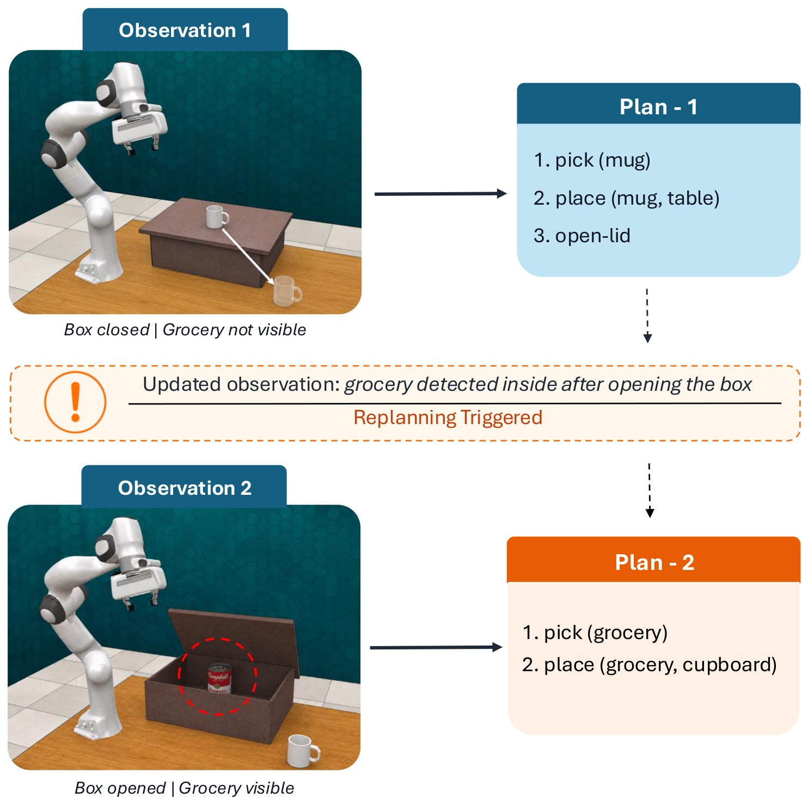

Abstract
Foundation-model (FM) based task and motion planning (TAMP) methods typically assume that the full scene is known before planning. In long-horizon manipulation, however, relevant objects may initially be hidden and only become observable as the robot interacts with the environment.
We introduce ROBUST-TAMP, a task and motion planning framework that first decides whether a discovery needs a replan. If replanning is needed, the robot executes unaffected actions while the FM synthesizes corrective actions. These actions are inserted into the existing plan based on urgency, either executed immediately or deferred while preserving the remaining plan. We evaluate ROBUST-TAMP on 14 MuJoCo environments with hidden objects, blocked placements, articulated containers, and multi-step tasks, and on five real-world settings. Our method completes 92.1% of simulated tasks, outperforming four baseline architectures by 47.1 percentage points under the same settings. Ablations show that each component either raises success or lowers planner calls, planning time, and robot idle time. An extensive study across model sizes, text and vision inputs, reasoning modes, and prompting further shows that in-context examples help the planner follow multi-step procedures that zero-shot prompting struggles with.
The problem
Consider a robot told to put all the groceries in the cupboard and all the mugs inside the box. Opening the box may reveal a grocery that was absent from the first observation and therefore missing from the plan. The opening succeeded, yet the remaining plan no longer covers the task.
Whether such a discovery needs replanning depends on the task and on what is still to be done: a mug already in the box needs nothing, a phone lying where a mug will be placed must be moved, and an object already named by a pending action is covered.
When a correction is needed it has to be coordinated with execution: some actions can continue while it is planned, an obstruction must be cleared before the affected placement, and other work can wait. ROBUST-TAMP makes these three decisions explicitly.

If, when, where
Scene observations, memory and execution history inform the three decisions; the planner returns corrective blocks that are checked before they enter the plan.
Selective replanning
After every executed bundle, visible and remembered objects are checked. A task-relevant object triggers a correction if its requirement is still unmet; an irrelevant one only if it occupies a placement area that a pending action needs. Objects already covered by a pending action, or acknowledged as needing nothing, do not call the planner.
Concurrent planning and execution
While the planner is queried, bundles that cannot interfere with the correction keep executing: anything touching the triggering objects, their goal regions, obstructed placement areas, lids or the staging area is held back, together with the bundles that depend on it.
Urgency-based insertion
The planner returns corrective blocks with an urgency and an insertion point. Urgent blocks enter at the front of the remaining plan; deferred blocks follow a named pending action or go to the end. Pending actions keep their order and identifiers.
Corrections in action
Independent actions continue while the planner works on a correction. An obstructing phone is cleared right after the replan (urgent); a grocery that is not in the way is appended after the remaining plan (deferred).
Decide like the planner
Initial scene. The answer reveals the end of ROBUST-TAMP's run.
Scene variants
The kitchen task places groceries in a cupboard and mugs inside a lidded box; the grill task cooks raw meat and serves cooked meat on a plate in the serving area. Objects hidden in the box or under the grill lid become observable only when it is opened, and their information is withheld from the planner until then. Hover a card to see the final state of ROBUST-TAMP's run; click it to watch all five methods.
Method comparison
Each clip replays the recorded planner answers of that method's best evaluation trial on the variant (success first, then highest partial goal completion, then fewest planner calls) and shows the whole execution sped up; the time spent waiting for the planner is not shown. All five clips of a variant share one speed-up. Kitchen uses zero-shot prompts, grill the in-context examples.
Outcomes at a glance
Click a cell to play that variant. Success as scored in the paper: every final object–region relation and cooking condition met.
Results
Comparison with external baselines
All methods share the robot, executor, action checks, variants, seeds, evaluator, planner model (Qwen3-VL-8B-Thinking) and GPU. With in-context examples ROBUST-TAMP completes 92.1% of all 140 trials, against 45.0% for the strongest baseline. The examples matter most for the grill's cooking procedure: its grill success rises from 22.0% to 88.0%.
EPoG's goal graph encodes final object–region relations only and cannot represent cooking.
SRK/SRG: kitchen/grill success (%). PGC: partial goal completion (%). Calls: FM calls per trial. Plan./Time: mean planning/total time per trial; Lat.: median FM-call latency (s). In-context examples reach only grill prompts, so kitchen results are shared.
Per-variant results
Rel.: task relevance; Ovl.: placement-area overlap; Exp.: expected correction (U urgent, D deferred). Ceil.: oracle-planner success with the same executor. Idle: mean waiting per discovery-triggered replanning episode (s). Urg.: share of trigger objects given the correct urgency on the first attempt (%).
Ablations
Seven core variants (K1–K4 zero-shot, G1–G3 with examples). −Memory: current observations only; −IF: replan for every newly visible object; −WHERE: suspend execution and regenerate the remaining plan; Fixed front/end: fixed insertion; −WHEN: suspend execution during replanning; LLM planner: text-only Qwen3-8B.
Planner study
Across the Qwen3 family, in-context examples raise success for every size and modality, from +5 to +24 points, mostly by fixing the grill's multi-step cooking procedure, and they shorten planning time. The 8B vision-language model with examples is the strongest configuration; larger models do not consistently do better.
Full planner tables: scale, modality and prompting; 8B-class models
K/G/All: kitchen, grill, all variants. Gray kitchen values in ICL rows are shared with zero-shot. Plan.: mean planning time per trial (s).
What validation and recovery caught
Failures caught during the 140 trials: rejected plans (plan check) and failed actions (execution), by trial outcome. Many successful trials depend on validation and recovery.
Real-world execution
The physical system uses an xArm manipulator and three depth cameras. SAM2.1 provides object segmentation masks, observed objects are associated with predefined placement regions, and these object–region observations update the same memory layer used in simulation. Point clouds from the cameras support grasp generation. The planning interface and the IF, WHEN and WHERE mechanisms are shared with simulation.
Real-world videos of the five settings will be added here.
BibTeX
@misc{robusttamp2027,
title = {Deciding If, When, and Where to Replan for Robust Manipulation},
author = {Anonymous},
year = {2027},
note = {Under double-blind review}
}